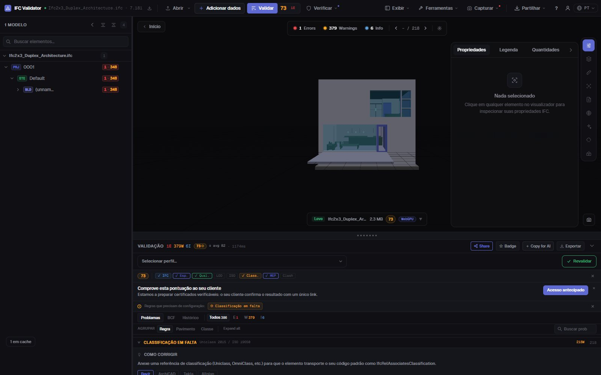
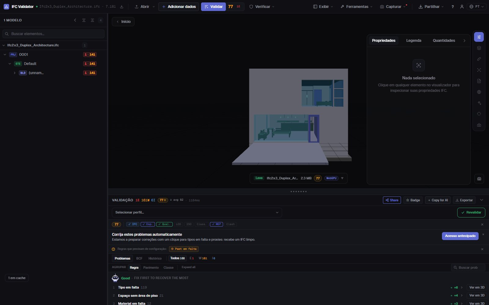

Verificar a classificação IFC
Uniclass, OmniClass, Psets
Encontre cada elemento de um IFC sem referência de classificação — de qualquer sistema ou só dos exigidos pelo seu Plano de Execução BIM — juntamente com conjuntos de propriedades em falta, valores vazios e nomes fora da convenção. Cada resultado é listado, contado e mostrado em 3D.
Verificar a classificação — grátis →Sem conta · Nada é enviado · No seu navegador · Grátis

O que pode fazer
Verificações de classificação e dados para uma entrega
O que um coordenador BIM verifica antes de aceitar um modelo no CDE.
Classificação em falta
Cada elemento físico sem IfcClassificationReference, de qualquer sistema ou só dos indicados (Uniclass 2015, OmniClass, CCS, NL-SfB…).
Classificação por IDS
Carregue um ficheiro IDS da buildingSMART para exigir um sistema e um código por tipo de elemento; a faceta de classificação do IDS é totalmente suportada.
Validação de Psets
Conjuntos de propriedades obrigatórios em falta e propriedades com valor vazio, por classe de elemento.
Convenção de nomes
Compare os nomes com os padrões do seu BEP, além de nomes vazios e duplicados (renomeáveis em bloco).
Visível em 3D
Isole no modelo os elementos que falham qualquer verificação, com o resto em transparência, e salte para cada um.
Exportável
Envie os resultados em BCF ao autor, ou descarregue um CSV, um relatório JSON ou um relatório de entrega imprimível.
Capturas

FAQ
Perguntas frequentes
Como verifico a classificação de um modelo IFC?
Abra o IFC no IFC Viewer Online e valide com a regra de classificação ativa (os perfis ISO 19650 e coordenação incluem-na). Lista cada elemento sem referência de classificação e mostra-os em 3D. Para exigir um sistema e um código por tipo de elemento, carregue um ficheiro IDS.
Que sistemas de classificação são suportados?
Qualquer um guardado como IfcClassification / IfcClassificationReference: Uniclass 2015, OmniClass, CCS, NL-SfB, CoClass, MasterFormat ou o seu. Pode aceitar qualquer sistema ou só os indicados.
Também valida conjuntos de propriedades?
Sim. Há regras para Psets obrigatórios em falta e valores vazios, e um IDS pode exigir propriedades, tipos de dados e valores concretos.
O modelo é enviado?
Não. A verificação corre no navegador com WebAssembly; o IFC não sai do seu computador. Grátis para qualquer uso, sem conta.
Posso partilhar os resultados com o autor do modelo?
Sim: exporte em BCF 2.1 para a ferramenta dele, em CSV ou JSON, ou como relatório de entrega imprimível.
Saiba o que está sem classificação antes de o modelo chegar ao CDE.
Classificação · Psets · Nomes · IDS · BCF
Verificar a classificação — grátis →